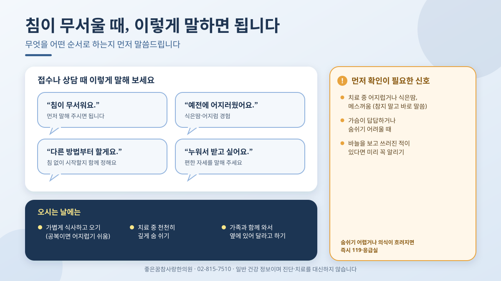

한 줄 답변
침이 무서운 것은 흔한 일이므로 진료 시작 때 두려움을 솔직하게 알리시면 설명과 속도, 자세를 조절하며 진행할 수 있고, 불편하면 언제든 중단을 요청하실 수 있습니다.
침이 무서운 것은 흔한 일이므로 진료 시작 때 두려움을 솔직하게 알리시면 설명과 속도, 자세를 조절하며 진행할 수 있고, 불편하면 언제든 중단을 요청하실 수 있습니다.
여쭙는 것
- 침이나 주사를 맞을 때 특히 무서운 부분은 무엇인가요? 바늘, 아픔, 쓰러질 것 같…
- 예전에 어지럽거나 식은땀이 났던 경험이 있나요?
- 침 말고 다른 방법으로 시작하고 싶으신가요?
생활에서 해 볼 것
- 접수나 상담 때 무섭다는 점을 먼저 말하기
- 진료 전 가볍게 식사하고 오기(공복이면 어지럼이 생기기 쉬움)
- 치료 중 천천히 깊게 숨 쉬며 긴장 풀기
한의원에서 함께 살필 것
- 침이 두려워 진료를 미뤄 온 분께 방법과 순서를 먼저 말씀드립니다.
- 처음에는 침을 쓰지 않는 방법으로 시작할지 함께 정합니다.
- 아이가 침을 무서워할 때 아이 눈높이에 맞춰 천천히 말씀드립니다.
먼저 확인이 필요한 신호
- 치료 중 어지럽거나 식은땀이 나거나 메스꺼운 경우(참지 말고 바로 말씀해 주세요)
- 가슴이 답답하거나 숨쉬기 어려운 경우
- 예전에 바늘을 보고 쓰러진 적이 있는 경우(미리 꼭 알려 주세요)

침이 무섭다면 접수나 상담 때 "침이 무서워요"라고 먼저 말씀해 주시면 됩니다. 그러면 과정을 먼저 설명하고, 누운 자세로 바꾸거나 속도를 늦추는 등 그에 맞춰 천천히 진행합니다. 침을 꼭 맞아야만 진료가 가능한 것은 아니며, 불편하면 언제든 멈춰 달라고 하셔도 됩니다.
왜 침이 무섭게 느껴질 수 있나요
- 주사나 바늘에 대한 기억 때문에 침도 같은 아픔일 것이라 걱정하는 분이 많습니다.
- 예전에 침이나 주사 때 어지럽거나 식은땀이 났던 경험이 있으면 긴장이 더 커집니다.
- 무엇을 하는지 모르는 상태가 두려움을 키우기도 합니다.
- 긴장하면 근육이 굳어 같은 자극도 더 크게 느껴질 수 있습니다.

먼저 이렇게 여쭙니다
- 침이나 주사를 맞을 때 특히 무서운 부분은 무엇인가요? 바늘, 아픔, 쓰러질 것 같은 느낌 중 어떤가요?
- 예전에 어지럽거나 식은땀이 났던 경험이 있나요?
- 침 말고 다른 방법으로 시작하고 싶으신가요?
- 앉은 자세와 누운 자세 중 어느 쪽이 편한가요?
일상에서 먼저 해 볼 수 있는 것
- 접수나 상담 때 무섭다는 점을 먼저 말하기
- 진료 전 가볍게 식사하고 오기(공복이면 어지럼이 생기기 쉬움)
- 치료 중 천천히 깊게 숨 쉬며 긴장 풀기
- 보호자나 가족과 함께 와서 옆에 있어 달라고 하기

한의원에서 함께 살필 수 있는 경우
- 침이 두려워 진료를 미뤄 온 분께 방법과 순서를 먼저 말씀드립니다.
- 처음에는 침을 쓰지 않는 방법으로 시작할지 함께 정합니다.
- 아이가 침을 무서워할 때 아이 눈높이에 맞춰 천천히 말씀드립니다.
좋은꿈참사랑한의원에서는 먼저 불편한 점과 두려운 부분을 듣고, 진맥을 기본으로 하고 필요하다고 판단될 때 설진을 더해 살핀 뒤 침, 온열, 추나, 한약 상담 가운데 지금 받아들이기 편한 방법부터 정합니다. 침을 쓰게 되면 누운 자세에서 하나씩 천천히 진행하고, 중간중간 괜찮은지 여쭙습니다.
이렇게 기록해 오시면 상담이 쉬워집니다
- 예전에 침이나 주사 때 있었던 반응
- 특히 무서운 부분
- 공복이나 피곤할 때 어지러운 편인지
- 복용 중인 약(항응고제 포함)

이런 증상은 먼저 확인이 필요합니다
- 치료 중 어지럽거나 식은땀이 나거나 메스꺼운 경우(참지 말고 바로 말씀해 주세요)
- 가슴이 답답하거나 숨쉬기 어려운 경우
- 예전에 바늘을 보고 쓰러진 적이 있는 경우(미리 꼭 알려 주세요)
숨쉬기 어렵거나 의식이 흐려지면 즉시 119나 응급실을 이용하세요. 복용 중인 약은 처방한 의사와 상의 없이 줄이거나 끊지 않습니다.
한눈에 보는 표
| 구분 | 핵심 |
|---|---|
| 여쭙는 것 | 침이나 주사를 맞을 때 특히 무서운 부분은 무엇인가요? 바늘, 아픔, 쓰러질 것 같은 느낌 중 어떤가요? 예전에 어지럽거나 식은땀이 났던 경험이 있나요? |
| 생활에서 해 볼 것 | 접수나 상담 때 무섭다는 점을 먼저 말하기 진료 전 가볍게 식사하고 오기(공복이면 어지럼이 생기기 쉬움) |
| 한의원에서 함께 살필 것 | 침이 두려워 진료를 미뤄 온 분께 방법과 순서를 먼저 말씀드립니다. 처음에는 침을 쓰지 않는 방법으로 시작할지 함께 정합니다. |
| 먼저 확인이 필요한 신호 | 치료 중 어지럽거나 식은땀이 나거나 메스꺼운 경우(참지 말고 바로 말씀해 주세요) 가슴이 답답하거나 숨쉬기 어려운 경우 |
자주 묻는 질문
침이 아픈가요?
느끼는 정도는 사람마다 다릅니다. 불편하면 바로 말씀해 주세요.
한 번 맞고 안 맞겠다고 해도 되나요?
네. 불편하면 중단을 요청할 수 있습니다.
아이가 침을 무서워해요.
아이의 상태와 나이에 맞춰 방법을 정하며 보호자의 설명이 큰 도움이 됩니다.
이 글은 일반적인 건강 정보이며 개인의 진단이나 치료를 대신하지 않습니다. 증상이 있거나 복용 중인 약이 있다면 진료를 통해 확인하세요. 치료 효과는 개인마다 다를 수 있습니다.
작성 기준: 일반적으로 알려져 있는 건강 정보를 참고해 정리했습니다(대표원장 감수). 증상 기록은 1~2주 동안 하루 1회, 비슷한 시간에 적어 오시면 지난 상태와 비교하기 쉽습니다.
지난 이야기부터 이어서 묻습니다
좋은꿈참사랑한의원은 재진 때 지난번 이야기부터 이어서 여쭙니다. 진료시간과 예약은 오시는 길에서 확인하세요.
좋은꿈참사랑한의원은 재진 때 지난번 이야기부터 이어서 여쭙니다. 진료시간과 예약은 오시는 길에서 확인하세요.